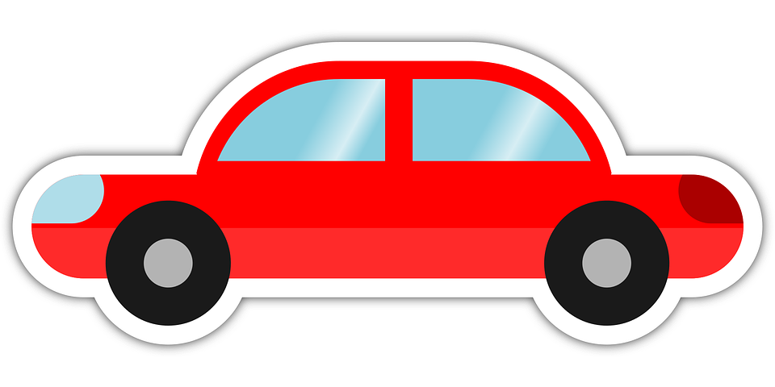

Overview: This is a scatterplot plotting Average Highway and City MPG. Each data point's radius is sized relative to the number of Engine Cylinders.
Mouseover data points to see more info on car make, number of cylinders, and associated Average Highway and City MPG.
The next page[ 2 ] will give an overview of engine cylinder composition.
Note: Data point tooltips may not immediately appear on initial mouseover due to how data is loaded. If tooltip does not appear at first, remove mouse from point, wait a couple seconds and try again.
Data Source: cars2017.csv
